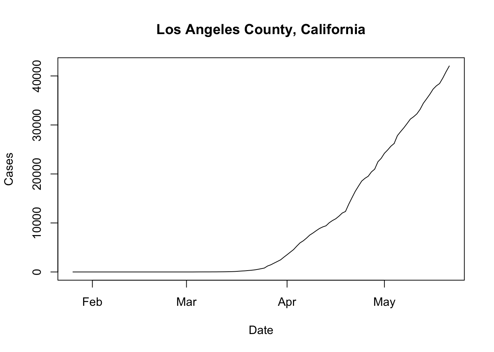
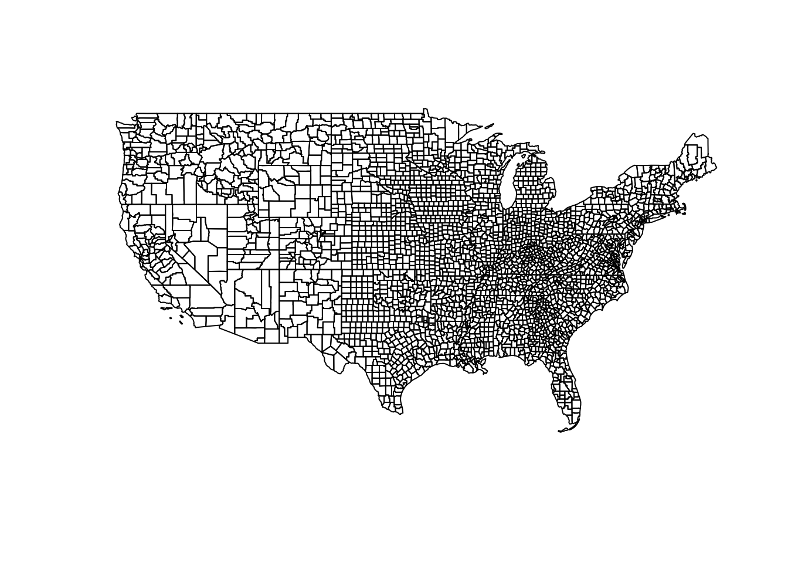
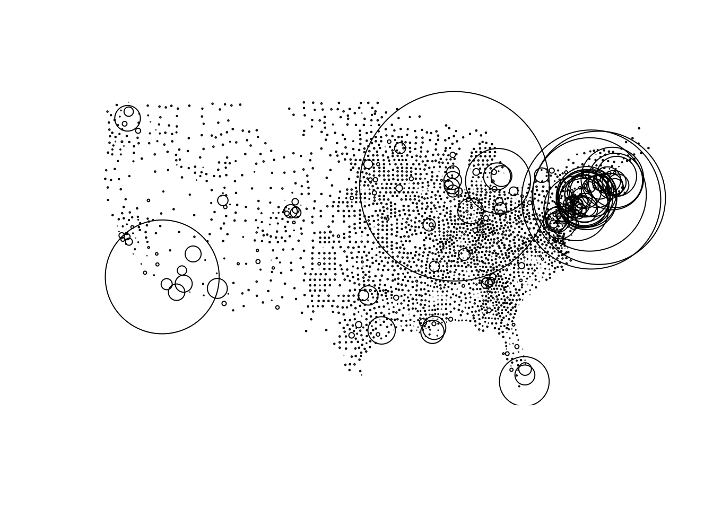

This section is all about getting data for visualization. You will read “live” COVID data from the NYTimes and join the most current date to a collection of USA county centroids. if you haven’t yet installed R and RStudio - or set up your COVID-19-dashboard project - please revisit here
To make our Shiny Application we first need data! In this section we are going to build functions to generate datasets that will be used in the application. These include:
county-level timeseries of the most up to data COVID-19 cases and deathscounty centroids joined to 'todays' COVID-19 counts.The New York Times archives a daily record of county-level USA COVID-19 cases and deaths in a GitHub repository here.
In this repository the most current, raw, CSV can be accessed at the following URL:
R is really cool, and lets read this URL directly using read.csv by treating the string as a connection:
# Here we are reading the URL directly using the url variable created above
covid19 = read.csv(url, stringsAsFactors = FALSE)and look at it using the head() function to print the first few rows:
## date county state fips cases
## 1 2020-01-21 Snohomish Washington 53061 1
## 2 2020-01-22 Snohomish Washington 53061 1
## 3 2020-01-23 Snohomish Washington 53061 1
## 4 2020-01-24 Cook Illinois 17031 1
## 5 2020-01-24 Snohomish Washington 53061 1
## 6 2020-01-25 Orange California 6059 1
## deaths
## 1 0
## 2 0
## 3 0
## 4 0
## 5 0
## 6 0That was easy! 😄
Now lets look at the structure (str) of the data:
## 'data.frame': 164886 obs. of 6 variables:
## $ date : chr "2020-01-21" "2020-01-22" "2020-01-23" "2020-01-24" ...
## $ county: chr "Snohomish" "Snohomish" "Snohomish" "Cook" ...
## $ state : chr "Washington" "Washington" "Washington" "Illinois" ...
## $ fips : int 53061 53061 53061 17031 53061 6059 17031 53061 4013 6037 ...
## $ cases : int 1 1 1 1 1 1 1 1 1 1 ...
## $ deaths: int 0 0 0 0 0 0 0 0 0 0 ...Things look pretty good but lets change our date values to date objects for nicer plotting.
We will also add a new variable called “name” which will be a text string concatenating the county and state names. Here we use the dplyr keyword mutate which allows us to create or transform variables. Since we are using mutate we need to attach the dplyr package.
library(dplyr)
covid19 = covid19 %>%
mutate(date = as.Date(date), # Override date with formated date
name = paste0(county, " County, ", state)) # Make a new text string
## Lets check!
str(covid19)## 'data.frame': 164886 obs. of 7 variables:
## $ date : Date, format: ...
## $ county: chr "Snohomish" "Snohomish" "Snohomish" "Cook" ...
## $ state : chr "Washington" "Washington" "Washington" "Illinois" ...
## $ fips : int 53061 53061 53061 17031 53061 6059 17031 53061 4013 6037 ...
## $ cases : int 1 1 1 1 1 1 1 1 1 1 ...
## $ deaths: int 0 0 0 0 0 0 0 0 0 0 ...
## $ name : chr "Snohomish County, Washington" "Snohomish County, Washington" "Snohomish County, Washington" "Cook County, Illinois" ...Great! Now we see date is in fact a date object, and name gives us the combined state-county name.
Now lets us see how the data works using LA County (FIP = 6037) as an example. Here we use the dplyr filter keyword to return rows matching a prescribed condition. Since dplyr was already attached above, we do not need to re-attach the package. This is also a good time to introduce that R lets you access any column of a data.frame using the $. For example, covid19$date would return all dates in our covid19 data.
# Filter the covid19 data to only those records were fips equals 6037
test = filter(covid19, fips == 6037)
# Plot the data
plot(x = test$date, # define the x axis variable using all the dates in test
y = test$cases, # define the y axis variable
type = "l", # we wnat a line "l" plot
xlab = "Date", ylab = "Cases", # refine the x and y labels
main = test$name[1]) # define the plot title.
Yikes LA! That is quite a curve….
There are many ways to get spatial data into R. I have saved the USA low-resolution county geometries here for you to download. Please do so and save it into the data folder folder you created.
Next, we will attach the sf library, read the downloaded RDS file, and plot the geometry attribute of the data!
library(sf) # Attach sf library
counties = readRDS("./data/counties.rds") # read rds data using the path to your resource
plot(counties$geometry) # plot the county geometries
Great! Now we have a spatial representation of all continental USA counties and a time series of COVID-19 cases and deaths. Lets create a new dataset that joins the most recent daily statistics to the spatial geometries For faster rendering, we will convert the county polygons into centroids using the following steps:
Filter our covid19_data to the the most current (maximum) dateJoin it to the counties using the same-named fips variable,today = filter(covid19, date == max(date)) %>% # filter all data to the maximum datae
left_join(st_centroid(counties), by = 'fips') %>% # cast county geometries to centroid, and join by fip
na.omit() %>% # remove NA values
mutate(size = abs(cases - mean(cases)) / sd(cases)) # Compute a scaled case count
# Plot and size (cex) the cnetroid data
plot(today$geometry, cex = today$size)
I know that was a lot, if you understood what was going on in the code great! If you didn’t, that is totally OK too (it just means you haven’t had as much programming experience).
helpers.RNow lets turn the above processes into functions that we can save to our helpers.R file and latter use in our Shiny Application.
You can either type them in or use the copy icon to put these in your helpers.R file
#Load Spatial Data
counties = readRDS("./data/counties.rds")
# Read in COVID-19 Timesries from URL
read_covid19 = function(){
url = 'https://raw.githubusercontent.com/nytimes/covid-19-data/master/us-counties.csv'
read.csv(url, stringsAsFactors = FALSE) %>%
mutate(date = as.Date(date),
fips = as.numeric(fips),
name = paste0(county, " County, ", state))
}
# Join County Data with
today_centroids = function(counties, covid_data){
filter(covid_data, date == max(date)) %>%
left_join(st_centroid(counties), by = 'fips') %>%
na.omit() %>%
mutate(size = abs(cases - mean(cases)) / sd(cases)) %>%
st_as_sf()
}Fantastic, now we have methods and data needed to build our Shiny App, and we have useful functions to let us manipulate that data. If you feel lost, again, it is not a problem! Lets move to the next section where we will make interactive graphs of our time series data using the dygraphs package and we will start to see things coming together